Префектура Симанэ · Ама, острова Оки · отель
«Энто» на острове Ама: отель без телевизоров с видом на кальдеру и ворота в геопарк Оки
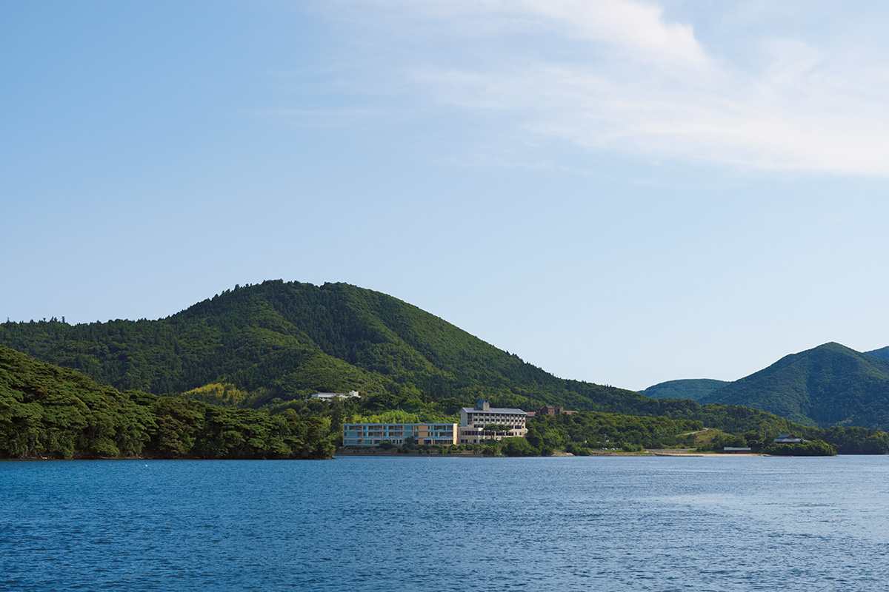
Летом 2021 года на острове Наканосима в архипелаге Оки открылся отель «Энто». В номерах нет ни телевизора, ни часов, зато есть окно во всю стену, а за ним кальдера Додзэн.
Остров
Ама: остров ссыльного императора
Городок Ама лежит на острове Наканосима, одном из островов Оки в префектуре Симанэ. Его площадь 33,44 км², а жителей на 1 апреля 2021 года было 2247. Остров известен как место ссылки императора Го-Тоба: здесь стоят святилище Оки и другие памятные места, связанные с ним.
Сегодня Ама знают и по устрицам «Ивагаки Харука», и по смелым подходам к развитию городка, в том числе к школьному образованию. Остров давно держится на людях, которые приезжают сюда снова и снова и остаются с ним на связи.
Отель
Гостиница и ворота в геопарк
Побыть наедине с дикой природой, познакомиться с теми, кто здесь живёт, увидеть себя крошечной точкой на огромной шкале времени и подумать о том, как связаны Земля и человек. Для таких поездок и задуман «Энто», открывшийся в июле 2021 года.
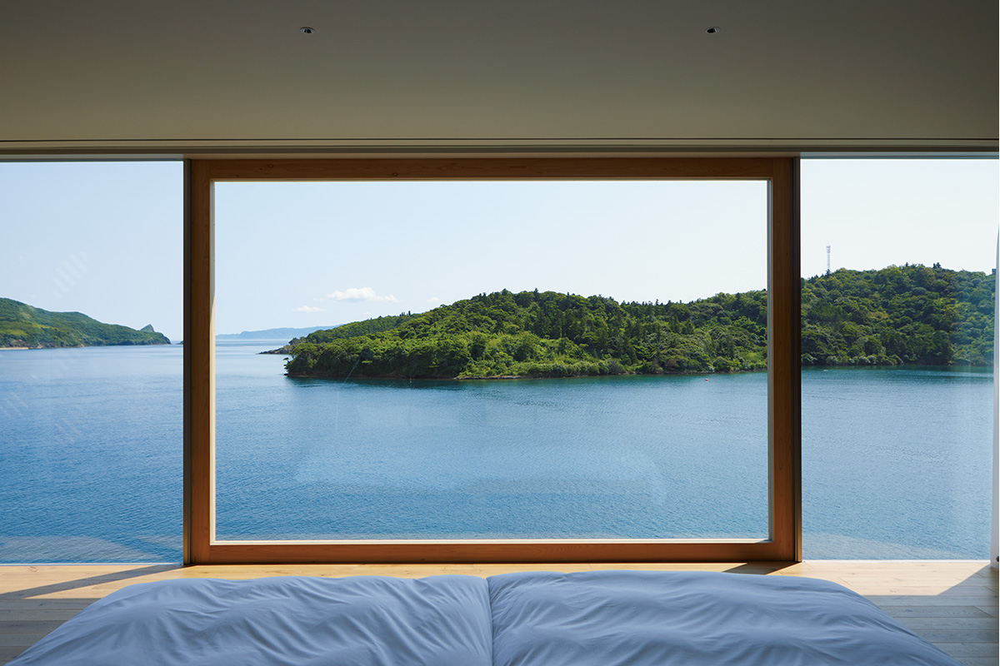
В названии заложено сразу несколько смыслов, которые по-японски звучат одинаково: «далёкий остров», «остров встреч», «далёкий огонёк». А ещё «энто» значит «ссылка на остров», что для Ама, принявшего когда-то императора-изгнанника, звучит особенно. Раньше здесь работал отель «Марин Порт Ама», единственная гостиница острова. Его флигель снесли и построили заново, главный корпус частично обновили, и получился комплекс из двух частей: отеля и центра Всемирного геопарка ЮНЕСКО Оки.
Геопарк это место, где изучают, как сложилась земля, кто на ней живёт и как с этим связана жизнь людей, и думают, как развиваться, не растрачивая природу. Здесь легко почувствовать себя частью большого потока прошлого, настоящего и будущего.
Дизайн
Нет ничего лишнего
Проект делало архитектурное бюро, известное в Японии и за рубежом, а фирменный стиль придумала дизайнер из Японского центра дизайна. Архитекторы исходили из двух слов: «честно» и «без границ». Честно значит ничего не добавлять и не украшать, оставить природу как есть. Без границ значит, что гости и жители острова должны встречаться здесь сами собой. Всё лишнее убрали, оставив главное, чем богат остров: нетронутую природу и общение с людьми.
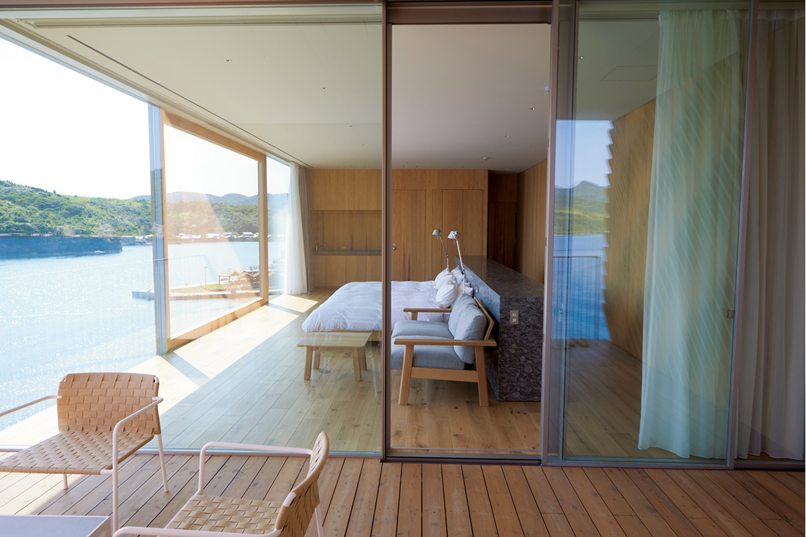
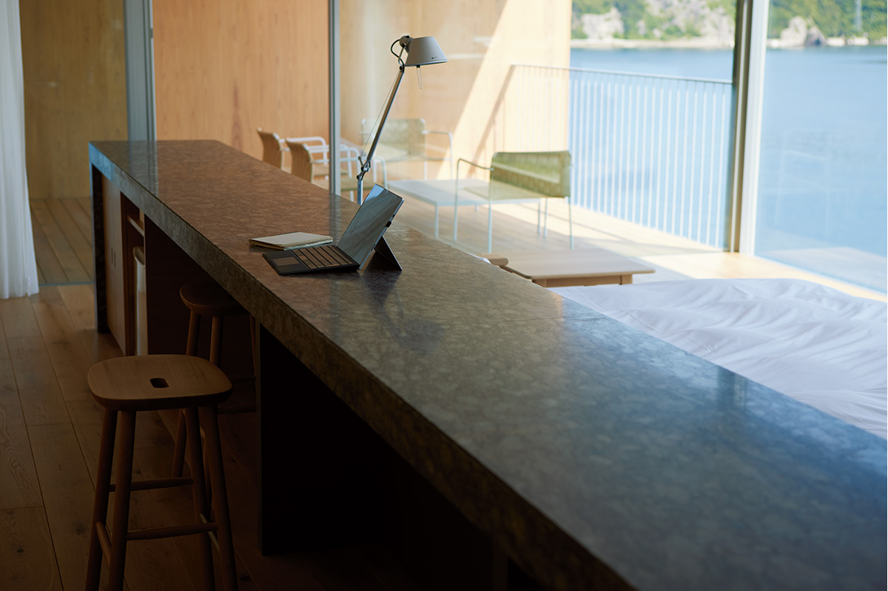
У Ама есть девиз, который переводится двояко: «нет того, чего нет» и «чего нет, без того можно обойтись, а всё важное уже здесь». Отель стал его воплощением. Здание, вещи в номерах, даже одежда персонала подобраны так, чтобы не спорить с пейзажем: простые формы, спокойные цвета, внимание к экологии. В номерах нет ни телевизора, ни часов. Есть только огромное окно с видом на кальдеру Додзэн и самое необходимое для удобства.
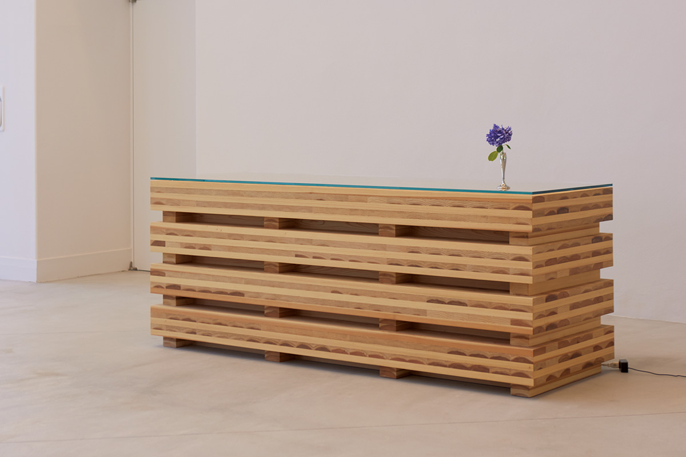
«Мы стараемся убрать весь лишний шум. Хочется дать гостям время и место, чтобы спокойно прожить всё, что они почувствовали на острове и узнали от людей, и вернуться к себе, как к чистому листу»
глава отеля «Энто»
Когда вокруг ничего нет, внимание переходит на то, что перед глазами, и простое «я сейчас здесь» становится главной роскошью. Владельцы надеются, что отель станет отправной точкой: сюда будут приезжать люди, а вслед за ними появятся новые дела и проекты на острове.
Здание
Дерево вместо бетона
По словам главы отеля, ворота геопарка должны как можно меньше влиять на природу острова, а гости должны увозить с собой новые мысли.
Новый корпус целиком построен из перекрёстно-клеёной древесины, CLT. Такие панели нагружают природу меньше бетона и стали. Их вырезают на заводских станках по компьютерным чертежам, а на месте лишь соединяют шурупами и металлическими креплениями. Для отдалённого острова это простой и быстрый способ.
«Панели лёгкие и при этом хорошо держат землетрясения. В дело идёт даже кривая древесина второго сорта, так что лес используется без отходов. Для перестройки большого отеля такую технологию в Японии применили впервые, и мы будем рады, если это откроет новые возможности для деревянного строительства на островах»
глава отеля «Энто»
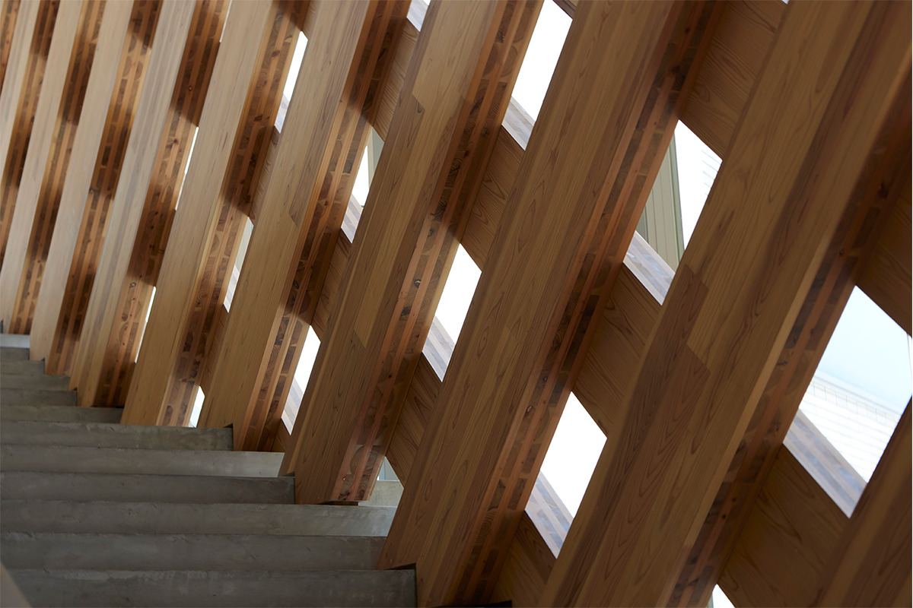
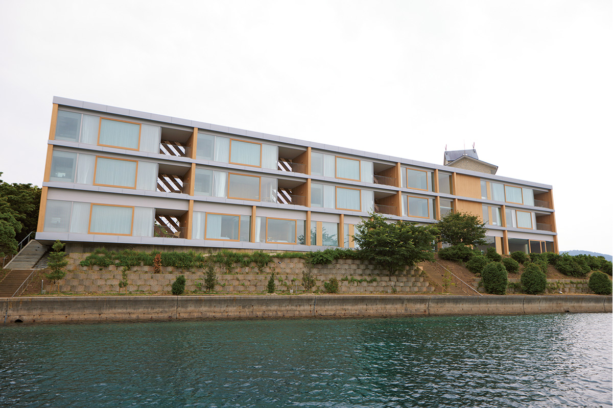
Старые постройки тоже не стали сносить без нужды, а использовали заново.
Геопарк
Сотни миллионов лет в одной гостиной
В гостиной геопарка выставлены окаменелости древних существ со всего света, например трилобит возрастом около 480 млн лет и кости апатозавра. Рядом выставочный зал, где коротко и просто рассказывают, как появилась Земля, как появились Оки и как здесь жили люди.
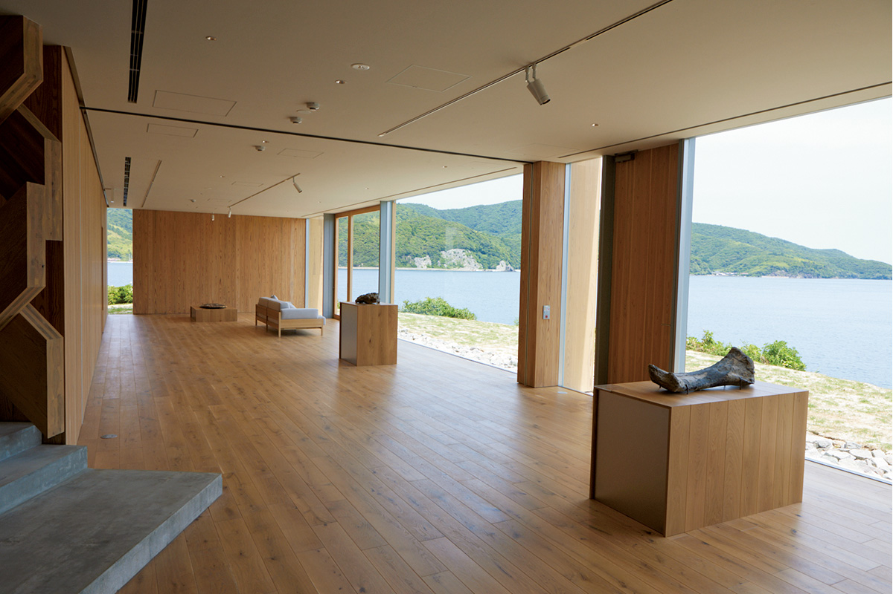
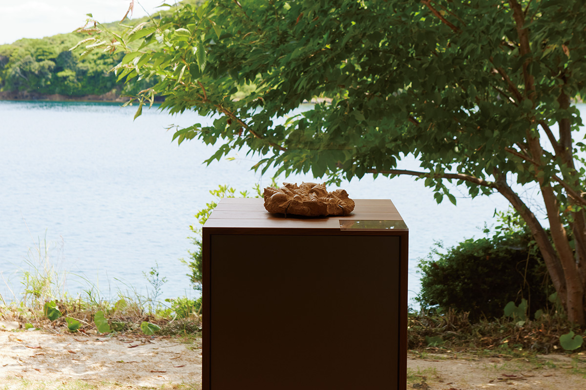
«Информации в гостиной и в зале мы даём немного, и это сознательно. Это место для подготовки перед тем, как выйти на остров и увидеть всё вживую. Наша задача отправить гостей за дверь, чтобы они почувствовали всё сами и встретились с людьми»
глава отеля «Энто»
Экспонаты в зале белые: настоящие цвета и масштаб гостям предлагают увидеть на месте.
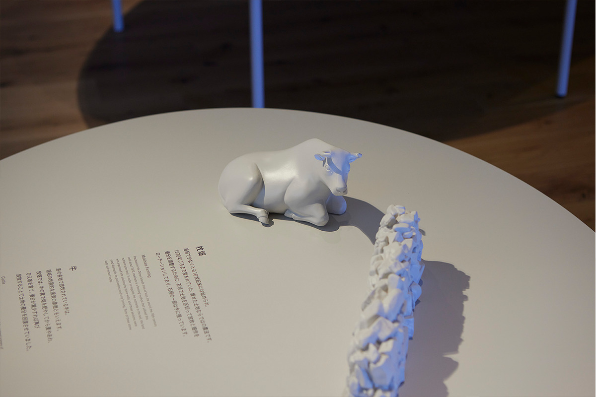
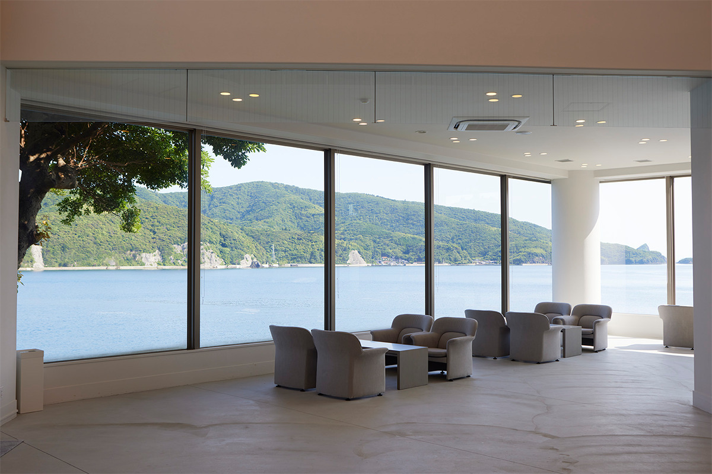
В отеле есть и филиал «Острова-библиотеки», программы, по которой книги расставлены по всему Ама.
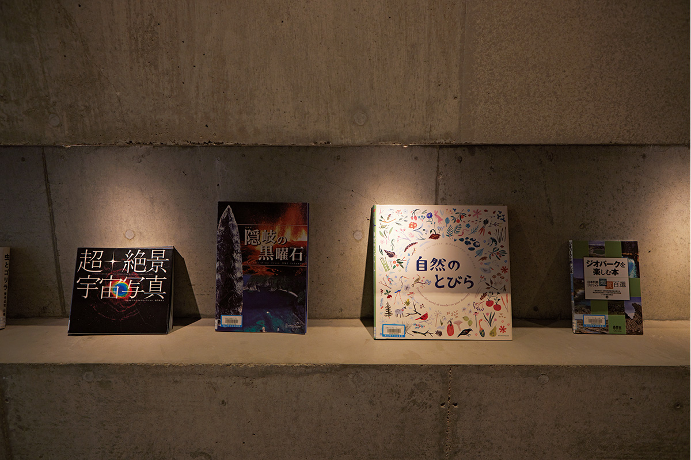
Номер
Окно вместо телевизора
Входишь в номер, и всё пространство перед тобой занимает кальдера Додзэн. Возвращаясь с прогулки, попадаешь в тишину, как будто снова оказался на природе.
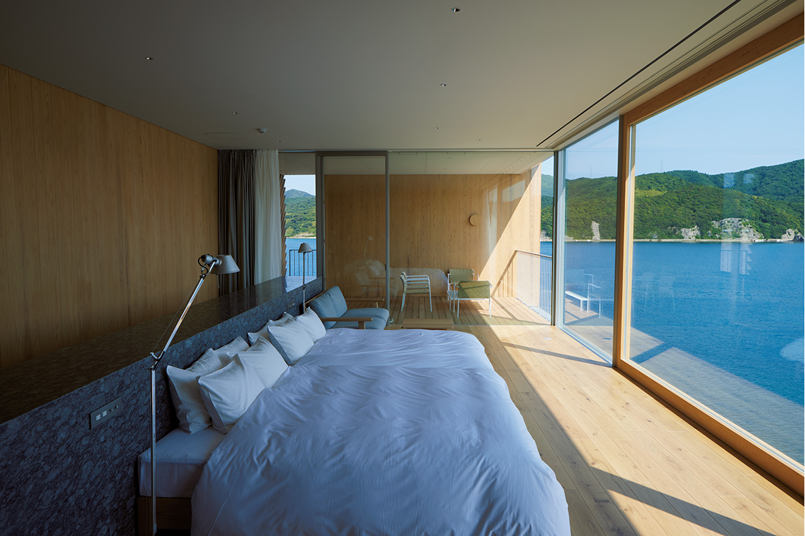
«В городских отелях улица кажется далёкой, а здесь она совсем рядом. Хочется, чтобы гости почувствовали новое богатство, которое рождается из того, чего нет»
глава отеля «Энто»
Всё в номере подобрано под пейзаж за окном: мягкий шампунь, бамбуковая зубная щётка из Ясуги, посуда из глины острова. Цвета везде природные. Пожив так несколько дней, начинаешь чувствовать себя частью природы.
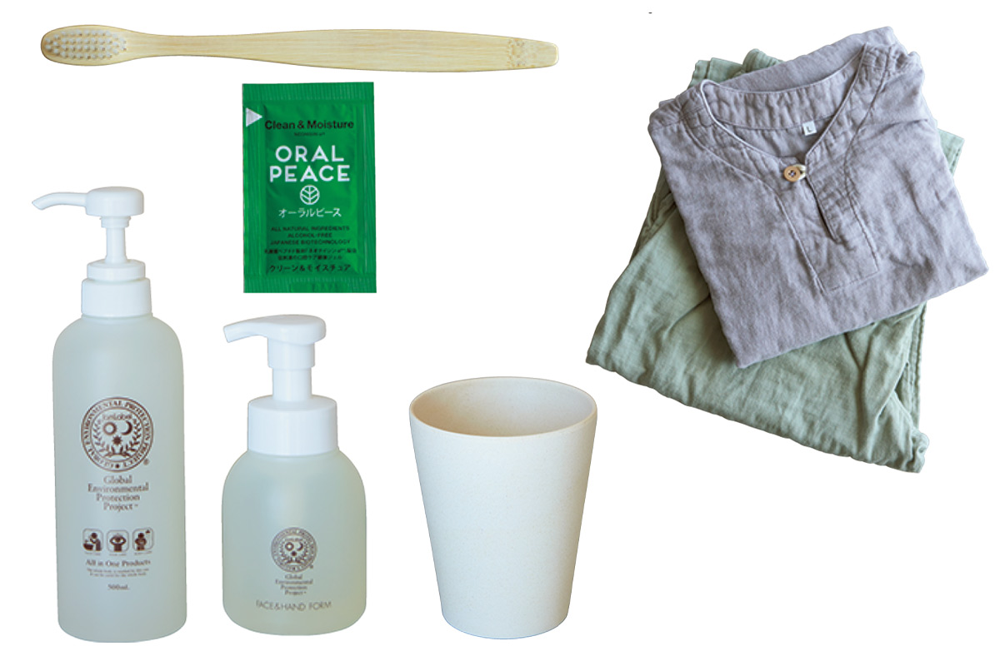
Ужин
Круговорот в одной тарелке
В ужин входят фирменные продукты Ама и всё, что сейчас в сезоне. Рис «Ама-но хонки-маи» растят на чистой родниковой воде острова, а удобряют раковинами устриц «Ивагаки Харука» и навозом бычков «Оки-гю». Так в одном ужине замыкается круг: устрицы, говядина и рис оказываются на столе вместе.
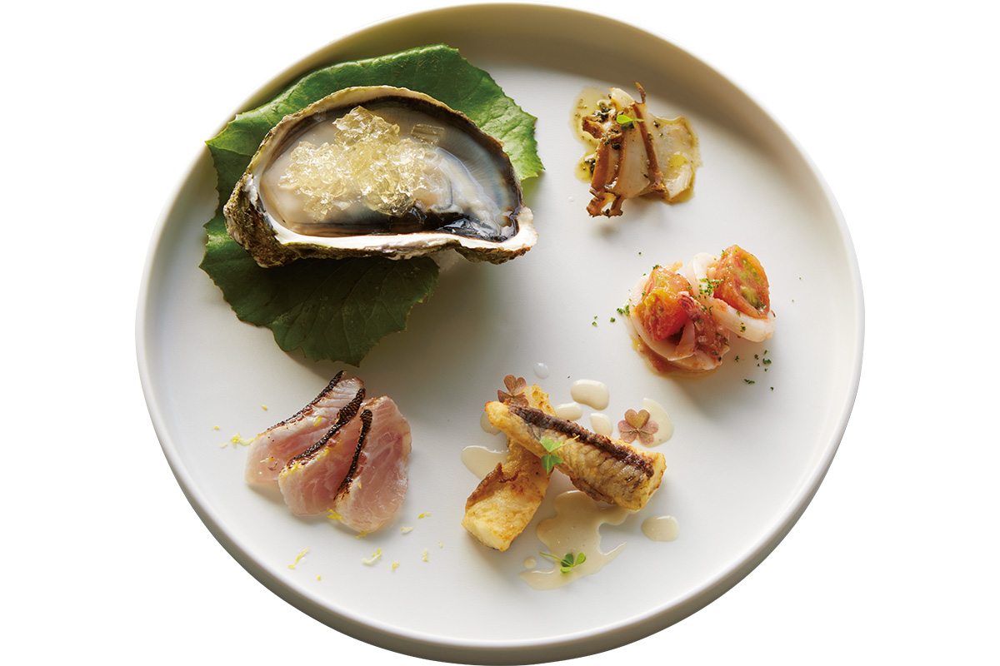
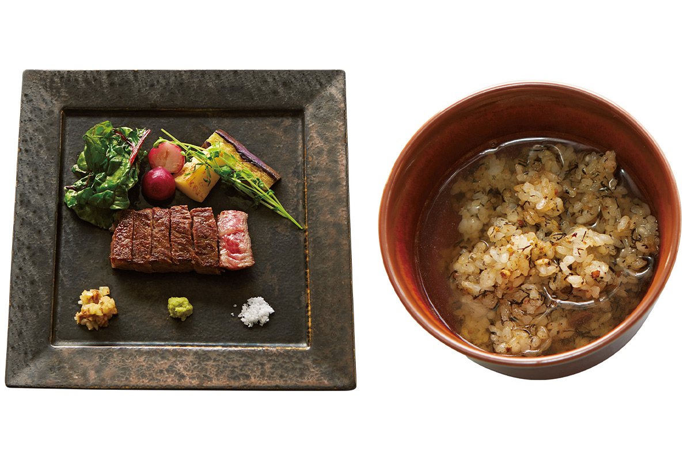
«Энто»
- Адрес
- префектура Симанэ, уезд Оки, Ама, Фукуи, 1375-1
- Телефон
- +81 8514-2-1000
- Номера
- 18 в главном корпусе, 18 в новом
- Цены / Вход
- от 28 380 иен за ночь с ужином и завтраком, с налогом, без платы за обслуживание
- Заезд / выезд
- 14:00 / 11:00
- Как добраться
- от аэропорта Ёнаго 25 минут на автобусе до порта Ситируи, оттуда 110 минут на скоростном судне или 255 минут на пароме. Или 30 минут на самолёте из аэропорта Идзумо до аэропорта Оки, затем 70 минут на пароме
- Сайт
- ento-oki.jp
Фото: Хидэмори Ватанабэ.